5 Instruction Set
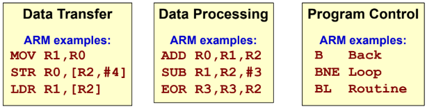
5.1 Data Transfer Instructions
Instructions that move data between registers and/or memory.
5.1.1 Register Data Transfer
MOV instruction utilises register direct or immediate addressing.
MOV/MOVS instruction. MVN instruction inverts the source operand bitwise by moving into the destination register.
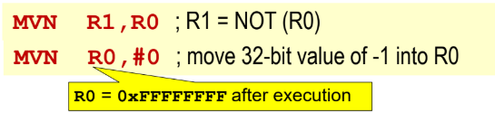
MVN instruction.
5.1.2 Memory Data Transfer
LDR accesses memory at effective address using indirect register addressing modes.
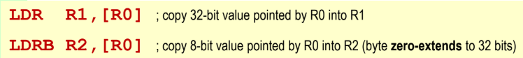
LDR/LDRB instruction. STR copies data to effective address using indirect register addressing modes.
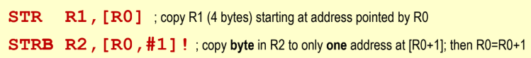
STR/STRB instruction.
5.2 Data Processing Instructions
5.2.1 Arithmetic Instructions
Supports register direct and immediate addressing (for rightmost operand only).
ADD/ADDS
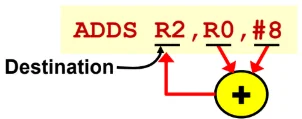
Rightmost operand can be immediate value or register. 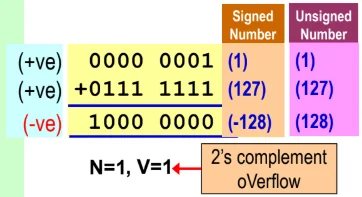
V=1: overflow when adding signed numbers. 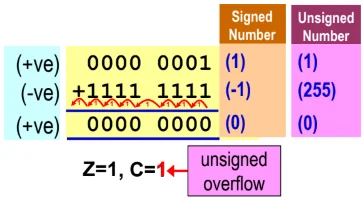
C=1: overflow when adding unsigned numbers. ADDS affects all the flags NZVC. SUB/SUBS/RSB/RSBS
SUB is not commutative; rightmost operand can be immediate value or register. RSB reverses the subtraction order. 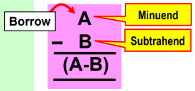
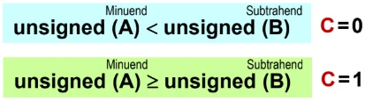
SUBS affecting C flag. 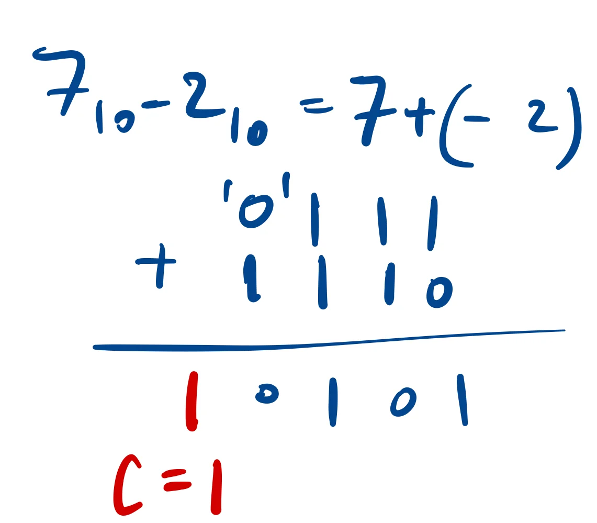
C=1 if minuend subtrahend 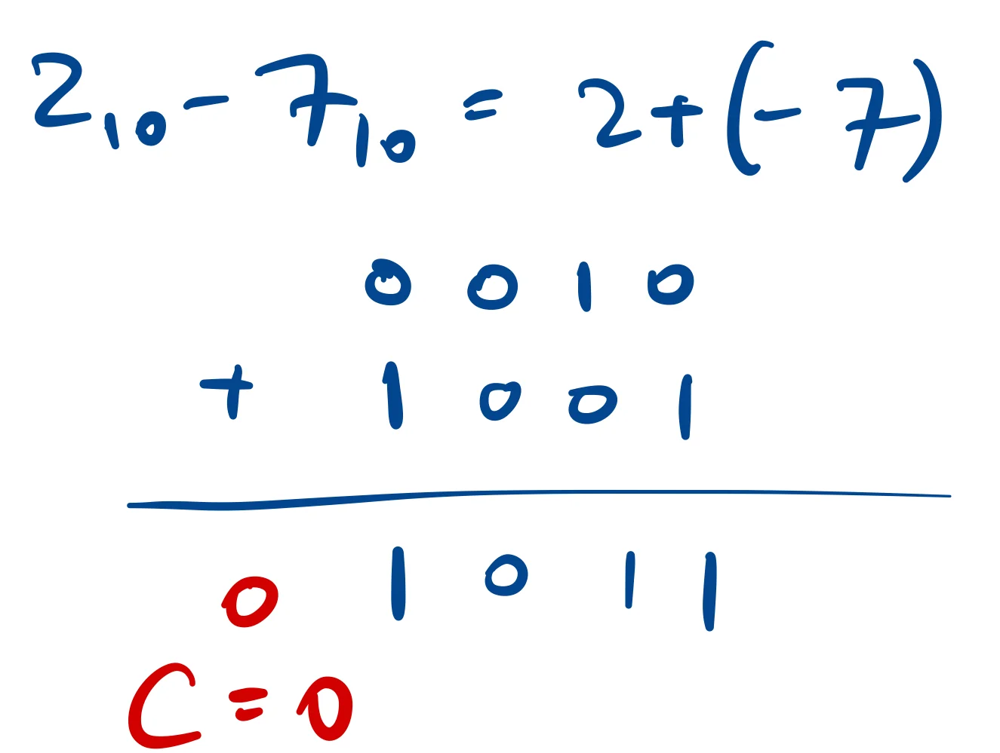
C=0 if minuend subtrahend. 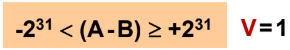
V=1 when the result is out of the signed 32-bit range. ADC/SBC/RSC [with S suffix to influence NZVC]
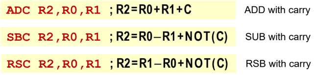
Uses value of C flag at that point.
5.2.2 Logical instructions
Boolean operators; S suffix influences N/Z flags.
MVN/MVNS
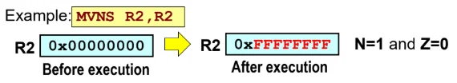
MVN takes two operands, performs bitwise inversion. AND/ANDS
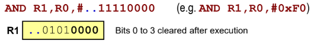
AND can be used to clear bits to 0. ORR/ORRS
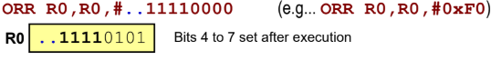
ORR can be used to set bits to 1. EOR/EORS
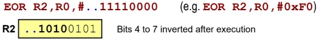
EOR used to complement bits. Logical shift left (LSL) & Logical Shift Right (LSR)
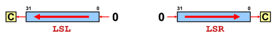
Multiply (shift left) or divide (shift right) by factor of , for N bits shifted. LSL: For signed/unsigned multiply, ’0’s are shifted into the LSB of the register from the right.
LSR: For unsigned divide, ’0’s are shifted into the MSB of the register from the left.
’S’ suffix will influence C flag.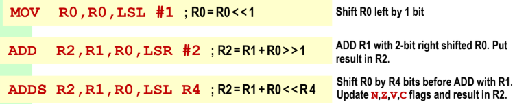
Shift operation is applied to the rightmost operand, number of bits to be shifted can be specified as immediate value or within a register. Arithmetic shift right (ASR)
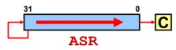
ASR: For signed divide, the sign bit is shifted into the MSB from the left.
’S’ suffix will influence C flag.Rotate right (ROR) or Rotate Right Extended (RRX)
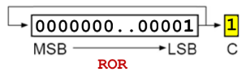
Bits shifted out are returned in at leftmost end, and also placed in C flag. 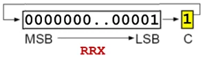
C flag is shifted into the register at the leftmost end, while the bit shifted out replaces the C flag. Rotate operation is applied to the rightmost operand.
5.3 Program Control Instructions
To disrupt the program’s normal sequential flow, the contents of the Program Counter (PC) is modifed, either directly or by using Branch instruction.
If a branch is executed based on some condition(s), it is a Conditional Branch or Branch on Conditional Code (Bcc).
If the condition in the conditional code (cc) is true, a displacement is added to the PC. Note that the PC value is 8 bytes ahead of the current Bcc being executed.
The displacement range is MB.
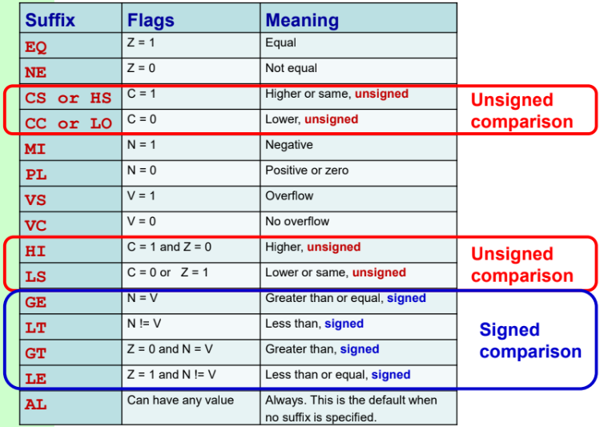
Signed vs unsigned values
For testing signed values, use GT, LT, GE, LE.
For testing unsigned values, use HI, LO, HS, LS.
Example of using different condition codes for the same function.
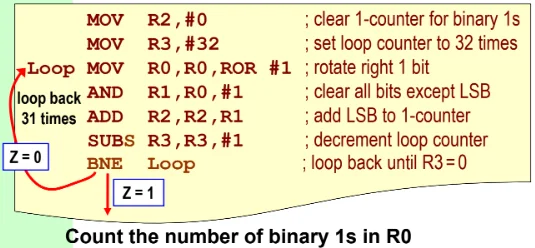
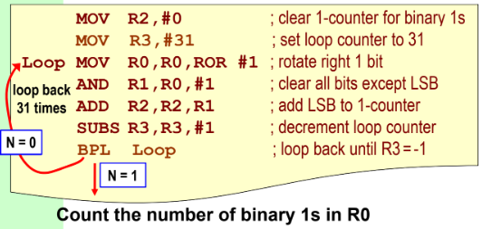
CMP instruction subtracts source operand from destination register and sets the CC flags (does not ’S’ suffix).
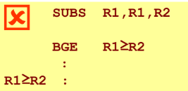
R1 is modified here. 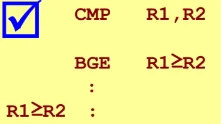
R1 unchanged. CMP tests (R1 - R2). CMN (Compare negative)
Tests for (R0 + R1). Essentially ADDS without modifying the destination register. TST (Test bits)
Performs bitwise AND between the two operands, without modifying the destination register. TEQ (Test equivalence)
Performs bitwise XOR between the two operands, without modifying the destination register.